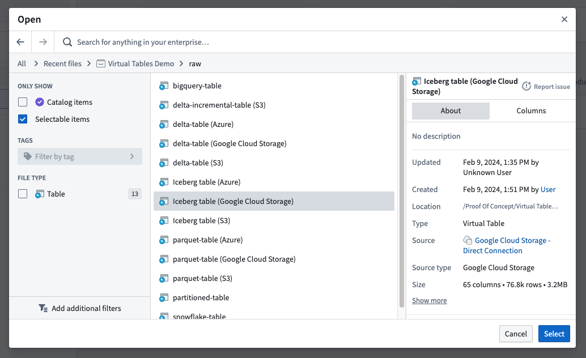

Use Foundry DevOps to include your virtual table in a Marketplace product for other users to install and reuse. Learn how to create your first product.
All virtual tables may be packaged and synced.
Currently, packaging an individual source is not supported, nor is packaging a source that has auto-registration of virtual tables enable.
Installers must ensure the destination source contains a table at the same location with the same schema as the original source to guarantee compatibility and functionality.
To add a virtual table to a product, first create a product, then add outputs. Choose the Add files option to navigate to the virtual table from within the Compass filesystem and add it to your product.
You can then select which virtual tables you would like to include in your product.
